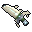
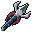
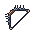
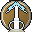
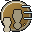

スキルとビルドSkills and builds
5 つの木と旅人、36 の技、天職、刻印、要、型。選ぶほど、遊び方が変わります。Five trees plus the Wayfarer, 36 skills, callings, runes, keystones and weapon types. What you choose changes how you play.
成長の仕組みHow you grow
レベルが上がると、力の振り分けと技の点が増えます。5 つの木と旅人は、最初から全部の行が取れます。天職は木を開く鍵ではなく、あなたの専門です。Leveling grants stat points and skill points. Every tree and the Wayfarer is open from the start; a calling is not a key but your specialty.
4 つのステータスFour stats
筋力・敏捷・精神・耐久を、ステータス画面（J）で振り分けます。15 と 30 に小さな分かれ目があります。Spend points on Strength, Agility, Spirit and Vitality in the status screen (J). Each has small breakpoints at 15 and 30.
技の点Skill points
技の画面（K）で、1 段 1 点。どの技も同じ値段です。Lv 10 までは 1 レベルおきに増え、そのあとは 1 レベルごとに 1 点です。Each rank costs 1 point in the skill screen (K). Points come every other level up to Lv 10, then 1 per level.
| レベルLevel | 1 | 5 | 10 | 15 | 21 | 27 | 33 | 40 |
|---|---|---|---|---|---|---|---|---|
| 技の点（合計）Skill points (total) | 1 | 3 | 5 | 10 | 16 | 22 | 28 | 35 |
三本の木を極めることはできません。何を選ぶかが、ビルドになります。You cannot max out three trees. What you pick is your build.
五つの木と旅人Five trees and the Wayfarer
1 本の木は 6 つの技。1 行目に入口の 2 つ、2 行目に 2 つ、3 行目に奥義の使う技、4 行目に要です。行ごとに必要レベルがあります（1・5・12・20）。線は前提です。Each tree has six skills: two entry skills in row 1, two in row 2, a signature active in row 3 and a keystone in row 4. Rows unlock at levels 1, 5, 12 and 20. Lines show prerequisites.
- 使う技（枠に置いて使う）Active (put in a slot)
- 常に効く技（覚えるだけで効く）Passive (works once learned)
- 要（かなめ。癖のある常時の技）Keystone (quirky always-on skill)

岩守りRockwarden 風読みWindreader
風読みWindreader

潮歌いTidesinger 灰の鍛え人Ashsmith
灰の鍛え人Ashsmith

骨の射手Boneshooter旅人Wayfarer
技の一覧Skill lists
技の一覧: 岩守りSkill list: Rockwarden
| 技Skill | 種類Type | 最大段Max rank | 働きEffect |
|---|---|---|---|
| 使うActive | 3 | 前方の扇を斬る。大きな相手に強いCone slash ahead; hits big foes harder. | |
| 常に効くPassive | 3 | 傷を受けた直後の近接が強くなるYour next melee hit after taking damage is stronger. | |
| 使うActive | 2 | 周りの敵の狙いを自分へ引くPull nearby enemies' aggro onto you. | |
| 常に効くPassive | 3 | 防具と押されにくさが上がるMore armor and knockback resistance. | |
| 使うActive | 2 | 周りを薙ぎ払い、軽く押し出すA sweeping blow around you with a light shove. | |
| 要Keystone | 1 | 近くの仲間が受ける傷の一部を自分が受けるTake a share of nearby allies' damage. |
技の一覧: 風読みSkill list: Windreader
| 技Skill | 種類Type | 最大段Max rank | 働きEffect |
|---|---|---|---|
| 使うActive | 2 | 見ている敵の手前まで詰めて斬るDash to the foe you look at and cut. | |
| 常に効くPassive | 3 | 移動が少し速く、落下の傷が減るSlightly faster on foot; less fall damage. | |
| 使うActive | 2 | 後ろへ素早く下がるHop back about four blocks. | |
| 常に効くPassive | 3 | 予告をかわした直後、攻撃が速くなるAttack faster right after dodging a floor telegraph. | |
| 使うActive | 2 | 素早い二連。背後から当てると強いQuick double strike; stronger from behind. | |
| 要Keystone | 1 | 近くに他の人がいない間、攻撃と移動が上がるStronger attack and speed while no one is nearby. |
技の一覧: 潮歌いSkill list: Tidesinger
| 技Skill | 種類Type | 最大段Max rank | 働きEffect |
|---|---|---|---|
| 使うActive | 3 | 仲間に短い吸収ハートを与えるGives allies a short absorption shield. | |
| 常に効くPassive | 3 | 自分と仲間のマナの回復が上がるFaster mana recovery for you and allies. | |
| 使うActive | 2 | 前方の敵を足もとへ引き寄せて鈍らせるPull foes ahead to your feet and slow them. | |
| 常に効くPassive | 3 | 技を当てた敵の動きを鈍らせるEnemies your skills hit move slower. | |
| 使うActive | 2 | 仲間のマナの回復を、しばらく大きく上げるGreatly boosts allies' mana recovery for a while. | |
| 要Keystone | 1 | 近くの仲間が多いほど技が強くなるSkills grow stronger with more allies nearby. |
技の一覧: 灰の鍛え人Skill list: Ashsmith
| 技Skill | 種類Type | 最大段Max rank | 働きEffect |
|---|---|---|---|
| 使うActive | 3 | 手の武器を熾にして炎を乗せるSet your weapon aglow with extra fire damage. | |
| 常に効くPassive | 3 | 火の傷が減り、熾火に乗っても燃えないLess fire damage; ember ground cannot burn you. | |
| 使うActive | 2 | 叩きつけて地に熾火を残すSlam the ground and leave burning embers. | |
| 常に効くPassive | 3 | 技を使うほど、次の近接が強くなるEach skill use charges your next melee hit. | |
| 使うActive | 2 | 周りの敵に灰をかぶせて弱らせるCover nearby foes in ash to weaken them. | |
| 要Keystone | 1 | 武器の強化段階が、技の傷に響くYour weapon's enhancement level boosts skill damage. |
技の一覧: 骨の射手Skill list: Boneshooter
| 技Skill | 種類Type | 最大段Max rank | 働きEffect |
|---|---|---|---|
| 使うActive | 3 | まっすぐ貫く矢A piercing arrow in a straight line. | |
| 常に効くPassive | 3 | 距離が離れるほど飛び道具が強いRanged damage grows with distance. | |
| 使うActive | 2 | 足もとに罠を置き、踏んだ敵を縛るSet traps that bind whoever steps on them. | |
| 常に効くPassive | 3 | 当てた敵に印を付け、皆の攻撃が強くなるMark foes you hit so everyone deals more to them. | |
| 使うActive | 2 | 狙った所へ光の矢を降らせるRain light arrows onto the aimed spot. | |
| 要Keystone | 1 | 動かずに引いた矢が強くなるArrows drawn while standing still hit harder. |
技の一覧: 旅人Skill list: Wayfarer
| 技Skill | 種類Type | 最大段Max rank | 働きEffect |
|---|---|---|---|
 標を打つMark Target | 使うActive | 2 | 見ている先に光の標を立てて、仲間に知らせるPlant a light beacon that all allies can see. |
| 備えの報いReadiness Reward | 常に効くPassive | 3 | 備えの三灯が満ちているとき、少し強くなるA small bonus while your readiness lamps are full. |
| 野営の手Camp Hand | 常に効くPassive | 2 | 焚き火の近くでマナが速く戻り、満腹が減りにくいFaster mana and slower hunger near campfires. |
| 目利きAppraiser | 常に効くPassive | 1 | 再鍛造の結晶が減り、特性の幅が見えるCheaper reforging; affix ranges become visible. |
 逃げ足Fleet Foot | 常に効くPassive | 3 | 体力が少ないとき、短く速く走れるA short burst of speed when badly hurt. |
| 旅の手帖Traveler's Journal | 要Keystone | 1 | 戦いの外なら、どこでも刻印と型を切り替えられるSwap runes and loadouts anywhere outside combat. |
天職Callings
天職は専門です。木はどれも最初から開いています。選んだ木の要を授かり、天性が付き、その木の技 3 つぶんが 1 点ずつ安くなります。A calling is a specialty. Every tree is already open. Choosing one grants that tree's keystone, an innate trait and a one-point discount on three of its skill ranks.
- 岩鯨の心臓を止め、心臓の報酬を選び終えると、天職を選ぶ画面が開きます。「あとで」にしても、技の画面から選べます。After you stop the Stone Whale's heart and choose its reward, a calling screen opens. You can postpone it and pick from the skill screen later.
- 一つ目の天職: その木の要を点なし・Lv 条件なしで授かり、天性が付き、その木の技の段（要・刻印は除く）3 つぶんが 1 点ずつ安くなります（戻る点）。First calling: you receive the tree's keystone free of points and level, gain the innate trait, and three of its skill ranks (not keystone or runes) cost 1 point less, refunded.
- 二つ目の天職（雷翼の心臓を止めたあと）: その木の要を授かり、5 つ目の技の枠が開きます。天性と割引はありません。Second calling (after Thunder Wing's heart): you receive that tree's keystone and a fifth skill slot unlocks. No innate trait or discount.
- 天職は転生で空に戻り、選び直せます。変えるには画面で二度押します。Callings reset on rebirth so you can pick again. Confirm a change by pressing twice.
| 天職Calling | 天性（一つ目の天職だけ）Innate trait (first calling only) |
|---|---|
| 岩守りRockwarden | 岩の肌: 強靭 +0.5、ノックバック耐性 +10%Stone Skin: +0.5 toughness, +10% knockback resistance |
| 風読みWindreader | 移動 +3%+3% movement speed |
| 潮歌いTidesinger | 歌い手: 最大マナ +10、仲間に向ける技の範囲 +1 ブロックSinger: +10 max mana, +1 block range on skills aimed at allies |
| 灰の鍛え人Ashsmith | 炉の手: 武器の強化の上乗せ +10%、火の傷 −10%Forge Hand: +10% weapon enhancement bonus, -10% fire damage |
| 骨の射手Boneshooter | 骨の目: 飛び道具 +5%、撃った矢の 25% は戻るBone Eye: +5% projectile damage, 25% of arrows return |
刻印（ルーン）Runes
使う技のうち 10 本には 3 択の刻印があり、技の形が変わります。Ten active skills each have three runes that reshape the skill.
- 対象: 巨神斬り・鯨尾薙ぎ・岩呼び・踏み込み・跳び退き・風裂き・守りの唄・引き潮・熾火の槌・雲穿ちSkills: Titan Cleave, Whale-Tail Sweep, Rock Call, Lunge, Backstep, Wind Rend, Ward Song, Ebb Tide, Ember Hammer, Cloud Piercer
- 技を極める（最大段）と開きます。天職の前でも、どの木の技でも選べます。最初に選ぶのは 1 点です。Maxing a skill unlocks its runes, in any tree and even before choosing a calling. Choosing the first rune costs 1 point.
- 付け替えは戦いの外で、炉・焚き火の近く。初回は無料、あとは共鳴の結晶 1。同時に効くのは 1 つです。Swap outside combat near a forge or campfire. The first swap is free, then 1 resonance crystal. Only one rune is active at a time.
伝説の書き換え（4 番目の刻印）Legendary rewrites (the fourth rune)
8 つの伝説の武器が、1 つの技を別の形に書き換えます。その武器を主の手に持つあいだだけ選べて効きます。Eight legendary weapons each rewrite one skill. They can be chosen and work only while held in your main hand.
| 伝説の武器Legendary weapon | 書き換わる技Skill rewritten |
|---|---|
| 踏み込みLunge | |
| 風裂きWind Rend | |
| 鯨尾薙ぎWhale-Tail Sweep | |
| 引き潮Ebb Tide | |
| 跳び退きBackstep | |
| 岩呼びRock Call | |
| 熾火の槌Ember Hammer | |
| 焼き入れTempering |
要（かなめ）Keystones
各木の 4 行目。得と引き換えに癖のある、常に効く技です。段は 1 つだけ。Row 4 of each tree: a quirky always-on skill with a trade-off. One rank only.
| 木Tree | 要Keystone | 働きEffect |
|---|---|---|
| 岩守りRockwarden | 守り石の約束Oath of the Warding Stone | 8 ブロック以内の仲間が受ける傷の 10% を自分が受ける（1 回 1 ハートまで）Take 10% of damage dealt to allies within 8 blocks (max 1 heart at a time) |
| 風読みWindreader | 孤風Lone Wind | 16 ブロック以内に他のプレイヤーがいない間、攻撃力 +12%・移動 +6%。一人遊びの木While no other player is within 16 blocks: +12% attack, +6% speed. The solo tree |
| 潮歌いTidesinger | 共鳴の声Chorus Voice | 8 ブロック以内の仲間 1 人につき（最大 5）、技の効果 +4%+4% skill effect per ally within 8 blocks (up to 5) |
| 灰の鍛え人Ashsmith | 鍛え人の目Smith's Eye | 手の武器の強化段階 1 つにつき技の傷 +1.5%（+10 で +15%）+1.5% skill damage per weapon enhancement level (+15% at +10) |
| 骨の射手Boneshooter | 静かな弦Still String | 3 秒動かずに引いた矢の威力 +25%。動くとやり直しArrows drawn after 3 s of standing still deal +25%; moving resets it |
| 旅人Wayfarer | 旅の手帖Traveler's Journal | 戦っていないあいだなら、どこでも刻印と型の保存を切り替えられるOutside combat you can swap runes and loadouts anywhere |
ステータスの刻み目Stat breakpoints
4 つのステータスそれぞれに、15 と 30 で小さな分かれ目があります（計 8 つ）。全部を 30 にするには力が 120 要るので、どこを届かせるかが選びです。Each stat has a small breakpoint at 15 and 30 (eight in total). Getting all four to 30 takes 120 points, so where to reach is a choice.
| ステータスStat | 15 でAt 15 | 30 でAt 30 |
|---|---|---|
| 筋力Strength | 重い武器の振り +8%Heavy weapon swings +8% | 範囲の技の押し出し ×1.25Area skill knockback x1.25 |
| 敏捷Agility | 予告をよけた直後 2 秒、移動 +8%+8% speed for 2 s after dodging a telegraph | 踏み込み・跳び退き・風裂きの待ち −10%Lunge, Backstep, Wind Rend cooldowns -10% |
| 精神Spirit | マナの回復 +10%+10% mana regeneration | 仲間に向ける技（唄・合図）の効果 +10%+10% effect of ally-targeted skills (songs, signal) |
| 耐久Vitality | ノックバック耐性 +10%+10% knockback resistance | 火・毒の傷 −15%-15% fire and poison damage |
武器の型Weapon types
13 種の武器は 5 つの型に分かれます。合う型の武器を持つと、技に小さなおまけが付きます。縛りはありません。The 13 weapons fall into five types. Holding a matching type gives a small bonus; nothing is ever required.
| 型Type | 武器Weapons | 技との噛み合い（縛りはなし）Synergy (never required) |
|---|---|---|
| 重Heavy | 鯨骨の大剣・余燼の戦斧・鍛え手の大鎚Whalebone Greatsword, Ember War Axe, Smith's Sledge | 巨神斬り・熾火の槌・焼き入れが強くなるBoosts Titan Cleave, Ember Hammer, Temper |
| 長Long | 番兵長の鉾・潮殻の三叉槍・珊瑚憑きの銛・羽守の鉤槍・灰被りの火掻きCaptain's Glaive, Tide Shell Trident, Coral Thrall's Harpoon, Warden's Hooked Glaive, Thrall's Poker | 踏み込み・引き潮の届き +1 ブロック、鯨尾薙ぎの半径 +0.5+1 block reach on Lunge and Ebb Tide, +0.5 radius on Whale-Tail Sweep |
| 速Fast | 水路の顎牙・雷獣の爪・潮招きの大鋏Waterway Fang, Raiju Claw, Tidecaller's Claw | 風裂きの倍率、見切りの持続などWind Rend multiplier, Foresight duration, and more |
| 遠Ranged | 雷翼の弓Thunder Wing Bow | 骨の射手の技の貫通・印・遠さPiercing, marking and range of Boneshooter skills |
| 守Guard | 珊瑚の盾Coral Shield | 岩呼びの持続、岩の構えの防具Rock Call duration, Stone Stance armor |
自由に混ぜるMixing freely
木は縛りではなく棚です。何本の木から取ってもよく、混ぜるほど効く仕掛けがあります。点の総数（Lv 50 で 45）と「回復・無敵は作らない」は変わりません。Trees are shelves, not cages. Take from as many trees as you like; several systems reward mixing. The total (45 points at Lv 50) is unchanged, and there is still no healing or invulnerability skill.
| 仕掛けSystem | 決まりRule |
|---|---|
| タグTags | 全 36 技に岩・風・潮・灰・骨のタグが付きます。装飾や手の武器のタグも数えます（10 まで）。1 つにつきそのタグの技の力 +1%。4 つと 7 つで小さな足し。All 36 skills carry a Rock, Wind, Tide, Ash or Bone tag; accessories and your held weapon can add one. Each counts up to 10 for +1% skill power of that tag, with small bonuses at 4 and 7. |
| 木のセットTree sets | 同じ木に使った点が 2・4・6 になるたびに、その木の小さな追加が付きます。At 2, 4 and 6 points spent in one tree you gain that tree's small bonus. |
| 連鎖Chains | 隣り合う枠に印を立てます（3 本まで）。前の技から 2 秒以内に次の技を使うと、力 +15%。Mark adjacent slots (up to three). Use the next skill within 2 s of the previous one for +15% power. |
| 構えStances | 守・疾・歌の 3 つ。得意と引き換えの小さな増減で、H で順に切り替えます（3 秒あけます）。Guard, Swift and Song: small trade-offs, cycled with H (3 s apart). |
| 熟練Mastery | 技を使う・当てる・予告をよけて当てるごとに育ち、1〜5 段。3 段で 4 つ目の「熟練の刻印」、5 段で足元に光の輪。転生しても残ります。Each skill grows by use, hits and dodge-hits, from 1 to 5. Mastery 3 opens a fourth rune; mastery 5 adds a light ring at your feet. It survives rebirth. |
| 条件の特性Conditional traits | 同じタグが 3 つ（5 つで大）そろうと、体力が少ないとき・予告をよけた直後などに小さな効果が付きます。回復や無敵ではありません。With three (five for the greater version) of one tag you gain small conditional bonuses, such as when low on health or just after dodging a telegraph. Never healing or invulnerability. |
| キーストーンKeystones | 1 点で取れる強い代わりに何かを失う 6 つ（不動の砦・硝子の刃・満ち潮・灰の契り・孤高の弦・疾風の舞）。2 つまで、戦いの外で無料で外せます。Six one-point picks that give a lot and cost something: Immovable Bastion, Glass Blade, Full Tide, Ash Pact, Lone String and Gale Dance. Hold up to two; remove them free outside combat. |
| 試着Try-on | 画面だけの写しに技を仮に振り、効果・マナ・待ちを確かめてから確定できます。Preview points on a screen-only copy, check effect, mana and cooldown, then confirm. |
| 武器の持ち替えWeapon swap | 技の枠は 2 組（近接用と弓用）。主の手に弓を持つと弓の組に入れ替わります。Two slot sets (melee and bow); holding a bow swaps to the bow set automatically. |
| 型の保存Loadouts | 枠・刻印・連鎖を 4 つ保存し、戦いの外でいつでも切り替えられます。Save four sets of slots, runes and chains and switch outside combat. |
技の力の合計は +100% で頭打ちです。Total skill power is capped at +100%.
深いスキルDeep skills
極めた技と、転生した人のための深い仕掛けです。K 画面の「変異・紋」ページと、木のつまみの橋・淵・前世の技から使います。Systems for mastered skills and for reborn players, found on the Mutations and Glyphs page of the skill screen and on the tree selector.
| 仕掛けSystem | 決まりRule |
|---|---|
| 変異Mutations | 8 つの技に 1 つずつ。その技を極め、巨神の素材（核 1 と鱗・欠片 3）を持っていると選べます。技が形を変えます（例: 巨神斬り→断崖、風裂き→飛ぶ刃）。1 技に 1 つで、外せません。One per skill for eight skills. Master the skill and hold titan materials (1 core and 3 scales or fragments) to reshape it, for example Titan Cleave into Cliffbreak or Wind Rend into Flying Blade. One per skill, permanent. |
| 橋Bridges | 木の輪（岩―風―潮―灰―骨―岩）の隣り合う 2 本から、技を 3 つずつ覚えると開く 5 つの技。両方のタグを数えます。Five skills that open when you know three skills in each of two neighbouring trees on the ring (Rock, Wind, Tide, Ash, Bone). They count both tags. |
| 紋の盤Glyph board | 試練を越えると紋（岩・風・潮・灰・骨、段 1〜3）が手に入ります。盤の穴は最初 3 つ、転生ごとに 1 つ開いて最大 6。穴ごとに中心の技を選ぶと、その技と隣の技が強まります。Clearing trials yields glyphs of five kinds and tiers 1 to 3. The board starts with three holes and gains one per rebirth, up to six. Pick a centre skill per hole to strengthen it and its neighbours. |
| 前世の技Past-life skills | 転生 1 回につき別枠の 2 点（最大 12）で取る 6 つ（遺響の一撃・旧き見張り・墓鐘・記憶の刃・最期の光・魂の糸）。Six skills bought with a separate pool of 2 points per rebirth (up to 12): Echo Strike, Old Watch, Grave Bell, Memory Blade, Last Light and Soul Thread. |
| 淵の木The Abyss tree | 6 本目の木。転生した人にだけ見えます。引き・鏡・残響・貢ぎ・顎・誓いの 6 つ。他の木を混ぜるほど効く作りです。A sixth tree visible only to reborn players: Pull, Mirror, Echo, Tribute, Maw and Oath. It rewards mixing other trees. |
最強の組み立てでも、心臓や番兵長を倒す速さには下限があり、戦いが崩れないように調整してあります。Even the strongest build keeps a floor on how fast the hearts and the Captain can be beaten, so fights never collapse.
深淵術Abyss arts
深淵の層の溜まりで覚える三つの術です。淵の木と同じ「深淵術師」の木に並び、マナを使い、待ちがあります。段は 3 つまで。Three arts learned at the pools of the abyss layers. They sit in the Abyss Caster tree beside the Abyss tree, use mana and have cooldowns. Each has three ranks.
| 術Art | 鍵（既定）Key (default) | 覚える所Learned at | 働きEffect |
|---|---|---|---|
| 光の術Light | = | 骨の層の溜まりBone layer pool | 灯りを一つ置く。中の敵の輪郭が見え、使った人は暗がりでも見やすい。段で範囲と続く時間が伸びるPlaces a light. Foes inside show their outline, and the caster sees better in the dark. Higher ranks extend range and duration |
| 重さの術Weight | - | 塩の層の溜まりSalt layer pool | 上るときの重さを緩める。使った人だけ。段で緩みが大きく、続く時間が長くなるEases the weight of the climb, for the caster only. Higher ranks ease more and last longer |
| 鼓動の術Heartbeat | \ | 雷の層の溜まりStorm layer pool | 近くの敵の鼓動を聞き、その輪郭を一時見せる。近くの人（自分を含む）を癒すHears nearby foes and reveals their outline briefly. Heals allies nearby, including yourself |
段を上げるには、灰の溜まりで深淵術師の木を開き、そのそばで術の鍵をしゃがみながら押します。鍵は操作の設定で変えられます。To raise a rank, open the Abyss Caster tree at the ash pool, then crouch and press the art's key beside it. Keys can be rebound in the controls settings.
振り直しと型の保存Respec and loadouts
| できることAction | 決まりRule |
|---|---|
| 技の振り直しRespec skills | Lv 15 まではどこでも無料。そのあとは共鳴の炉のそばでいつでも共鳴の結晶 1（旅人の目利きがあれば無料）Free anywhere until Lv 15. After that, near a Resonance Forge at any time for 1 resonance crystal (free with the Wayfarer's Eye) |
| 戻るものWhat returns | 覚えた技・刻印・要がすべて戻り、技の点は全部戻る。天職は変わらないAll learned skills, runes and keystones reset and every point is refunded. Your calling stays |
| 刻印の付け替えSwap runes | 戦いの外で、炉か焚き火の近く（旅の手帖があればどこでも）。初回は無料、以後は結晶 1Outside combat near a forge or campfire (anywhere with the Traveler's Journal). First swap free, then 1 crystal |
| 型の保存Loadouts | 枠・刻印・連鎖の組を 4 つ保存でき、戦いの外でいつでも切り替えられるSave four sets of slots, runes and chains and switch outside combat |
| ステータスの振り直しRespec stats | 技と同じ炉・結晶・費用の表。回数は技と別に数えるSame forge and cost table as skills; counted separately |
装備の「木の印」の特性は、その木の技の力を伸ばします。The "tree mark" affixes on gear boost the power of that tree's skills. 装備のページへSee the gear page